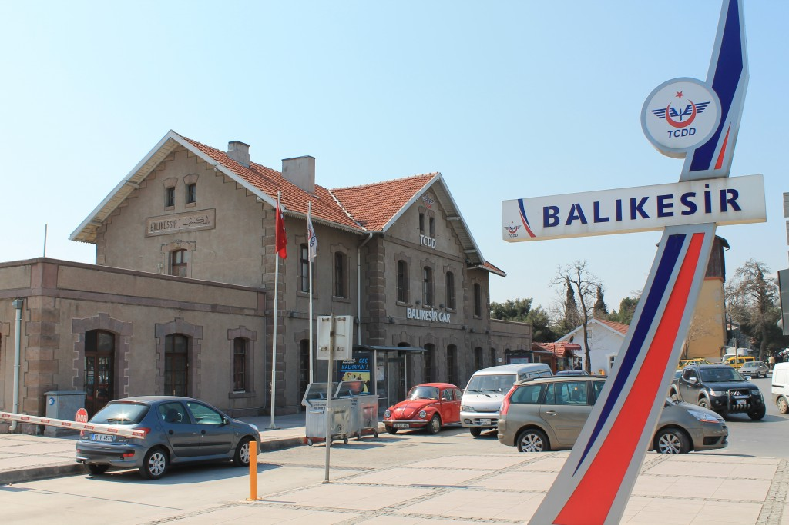

Balıkesir is the capital city of Balıkesir Province. Balıkesir is in the Marmara region of Turkey and has a population of 331,788] inhabitants. Between 1341-1922, it was the capital of Karasi. Balıkesir has famous carpet , cologne and desert (höşmerim). Actually my hometown is a small city. If you will visit there , you can go a little different places but they are really beautiful places.
